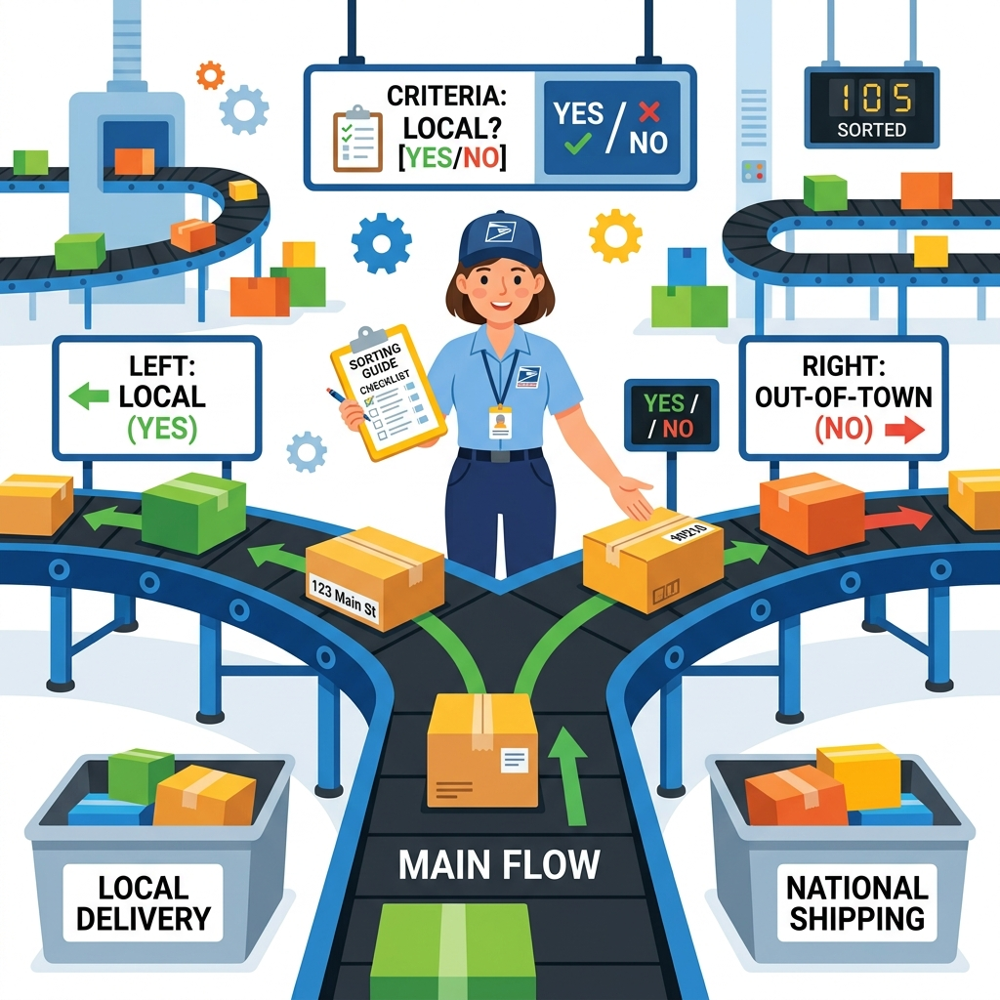
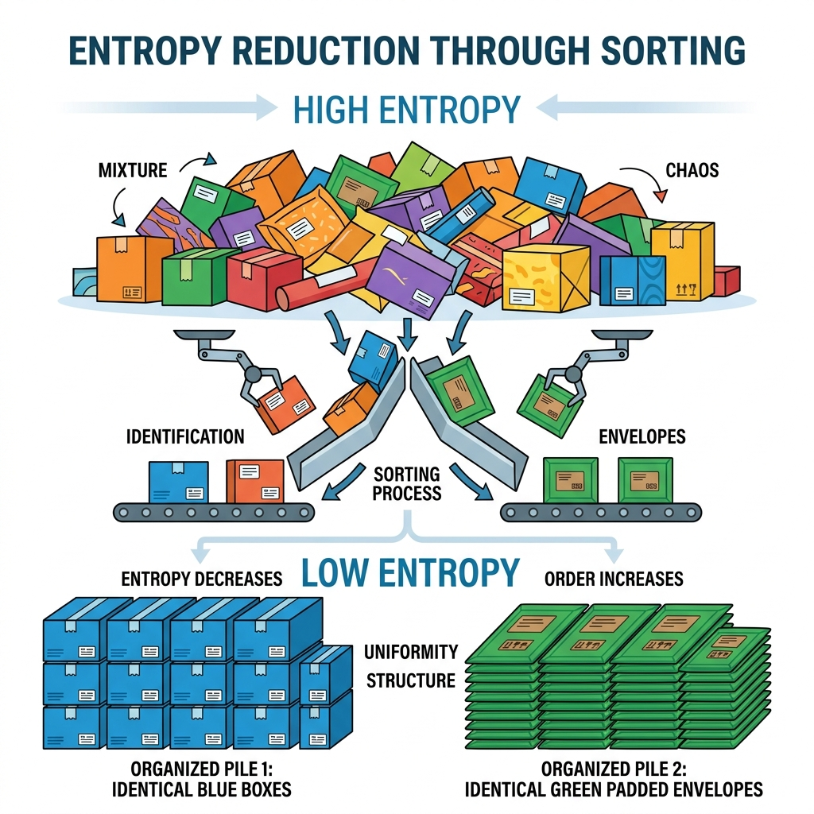
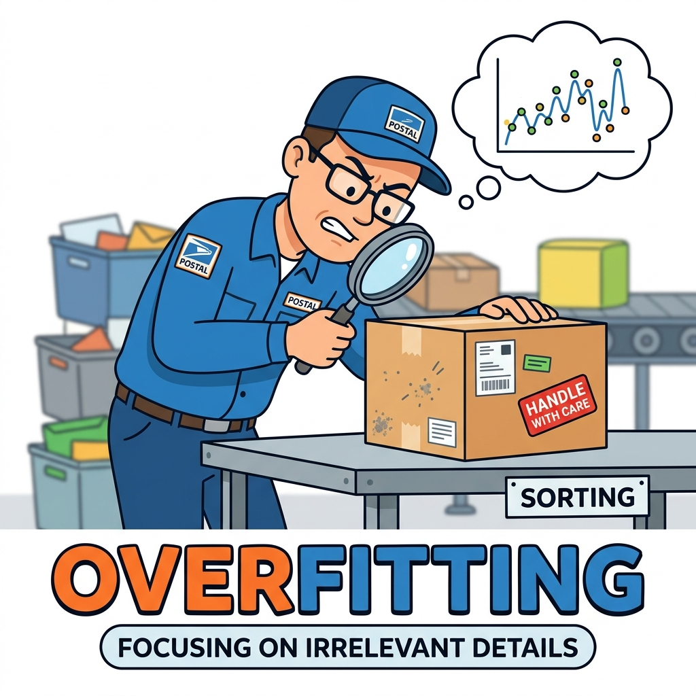
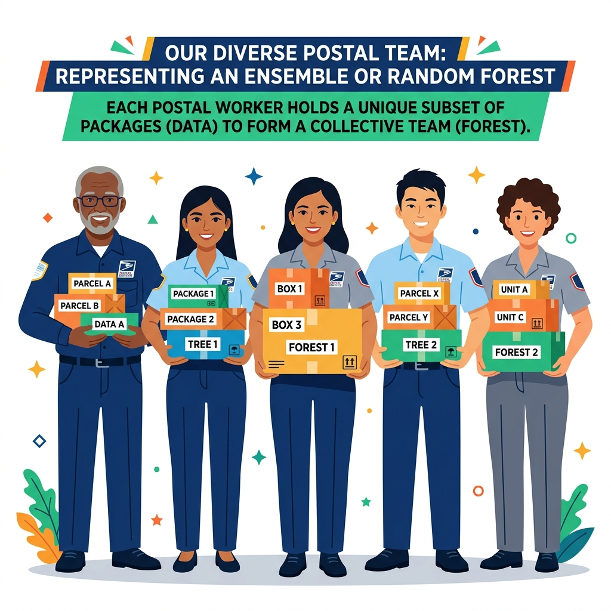
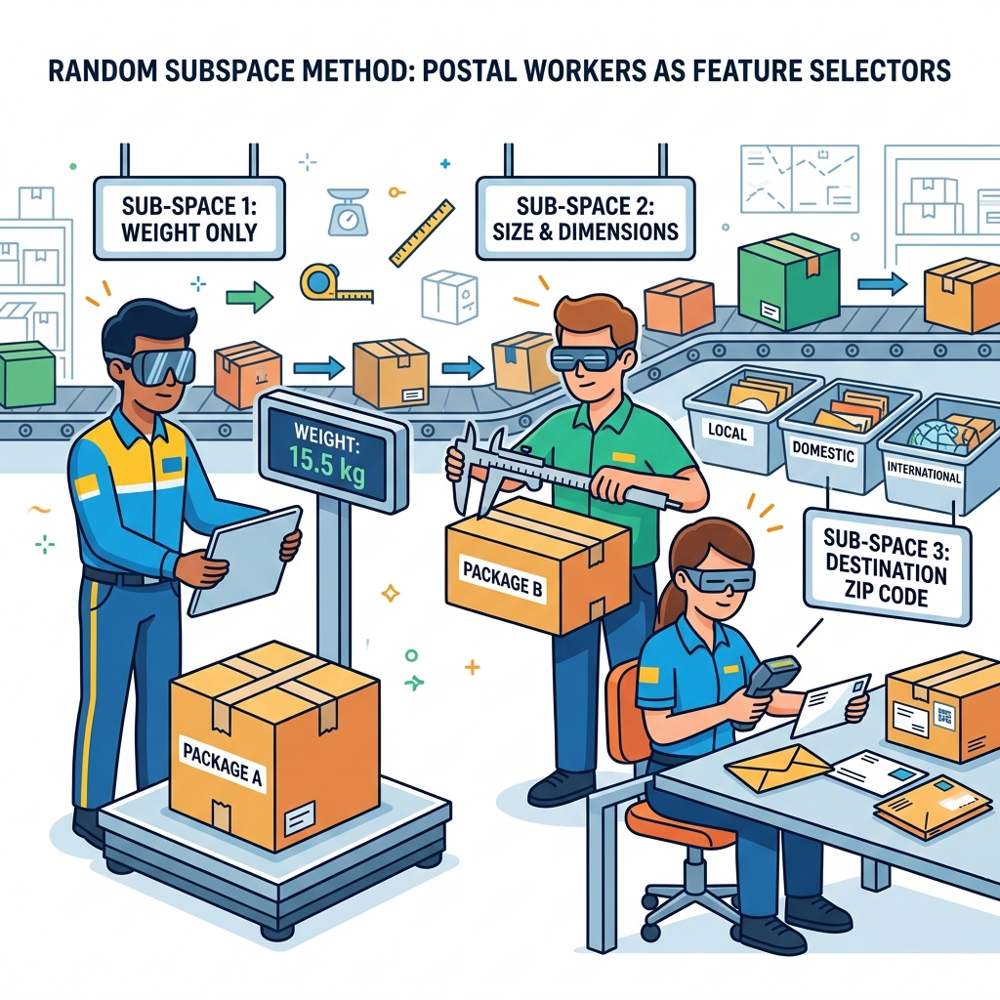
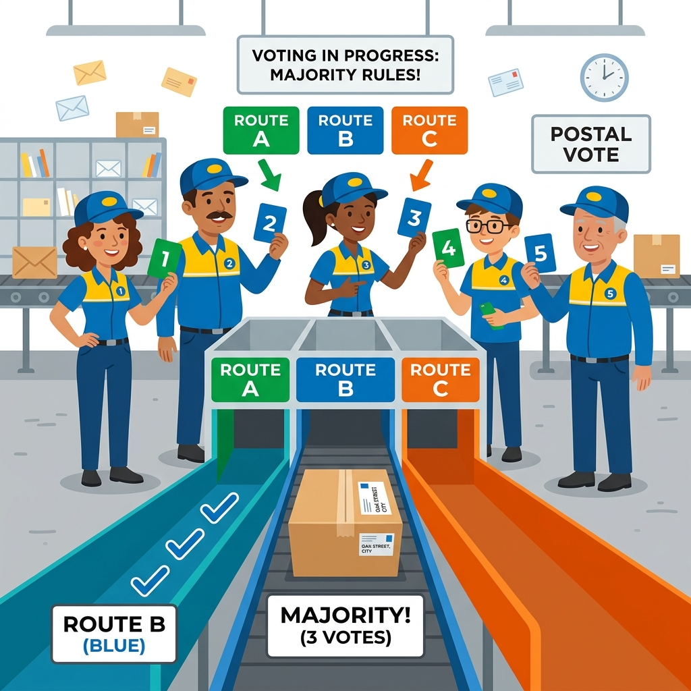
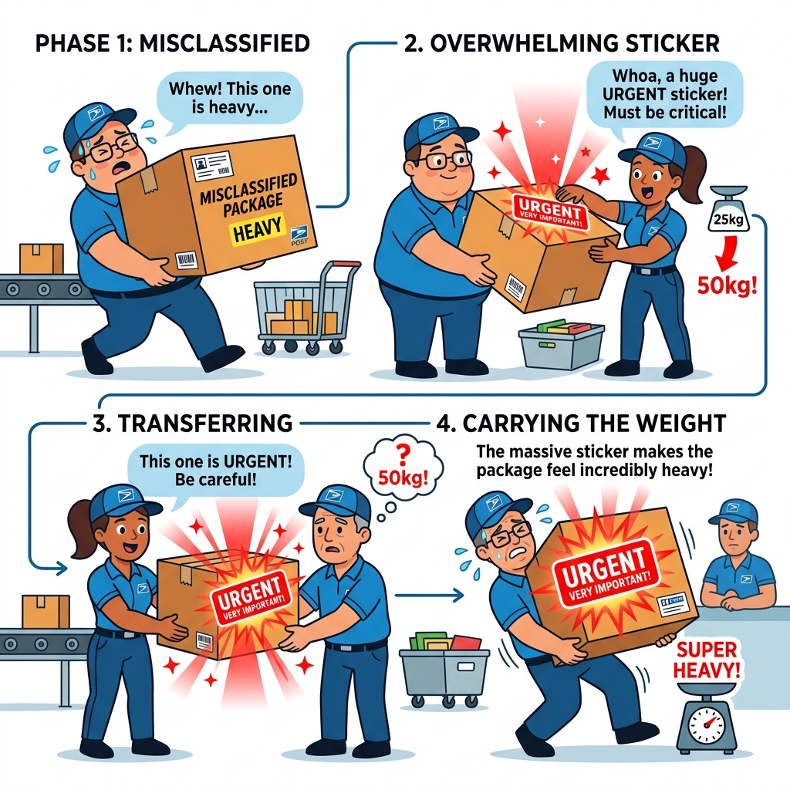
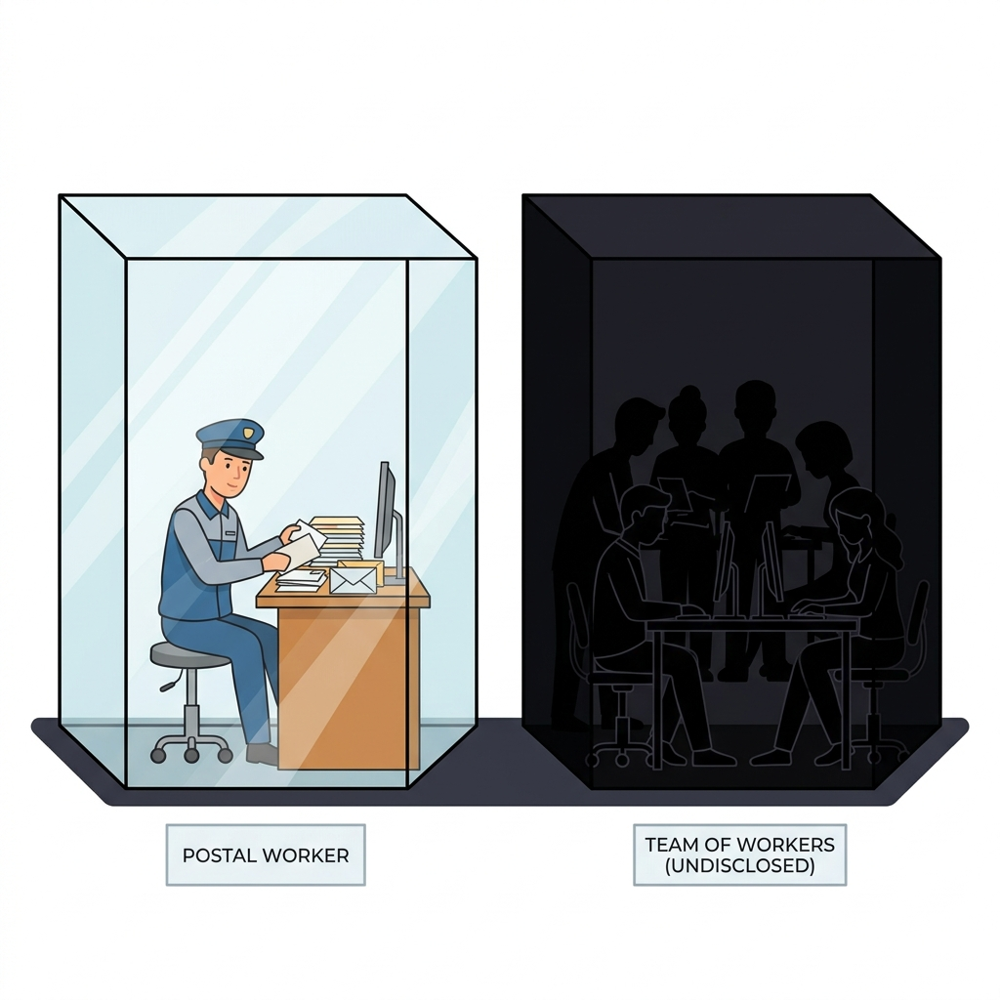
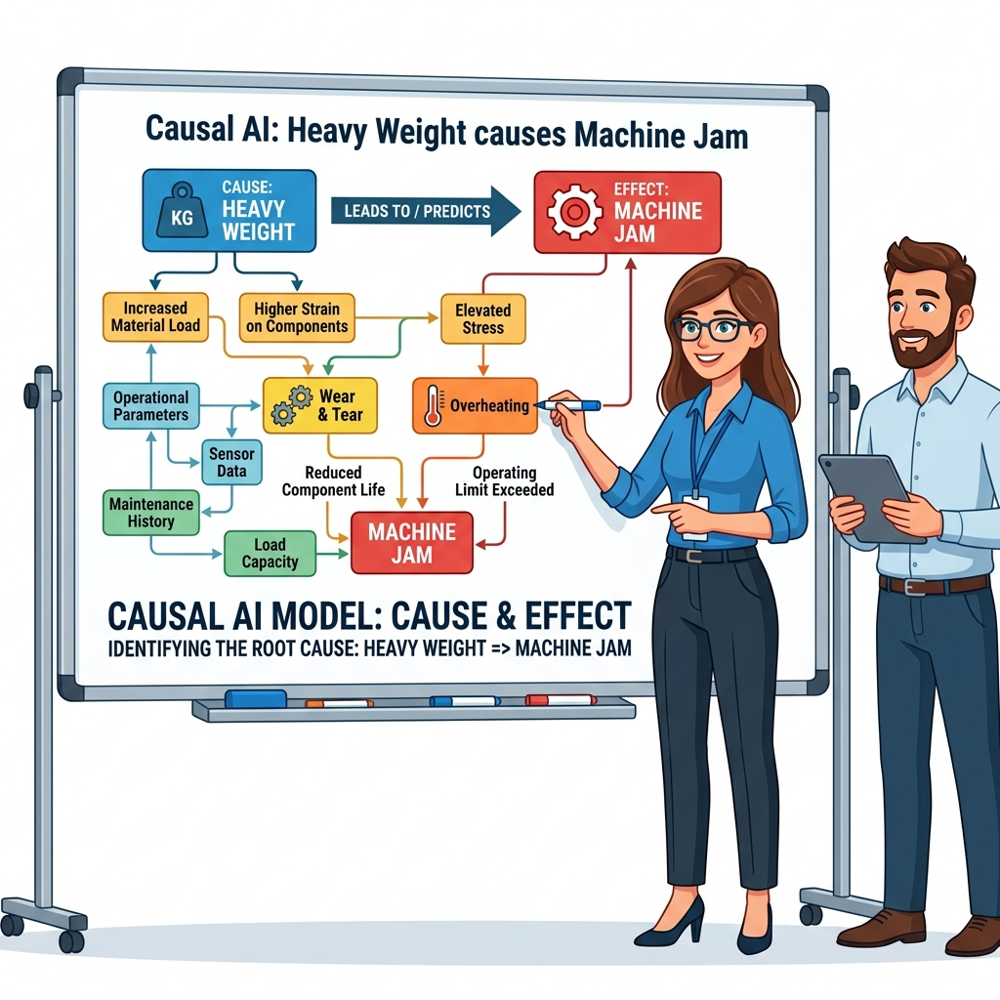

Zero to hero, from here Decision trees → Random Forest → AdaBoost → XAI/Causal intro
Decision Trees, Random Forests, and AdaBoost, with entropy computed by hand — framed by an early look at explainability and causality that Module 7 develops fully.
📝 Module Abstract
This module provides a comprehensive overview of supervised learning, specifically focusing on classification analysis through techniques like decision trees and random forests. It explores the fundamental mechanics of building a model, such as selecting attributes with high information gain and using regularization or pruning to address the generalization dilemma of overfitting versus underfitting. The material further distinguishes between ensemble methods like adaptive boosting and random forests, comparing their robustness to noise and their computational complexity. Beyond technical execution, the source emphasizes the importance of Explainable AI (XAI) and Causal AI, highlighting the need for transparency and cause-and-effect understanding in high-stakes fields like healthcare. Finally, it offers practical Python implementation guidance and discusses the trade-offs between model accuracy and interpretability.
By the end of this module, you'll be able to
Compute entropy and information gain by hand, and explain why a tree picks one attribute to split on over another
Diagnose overfitting vs. underfitting in a tree, and explain what pruning actually removes
Explain why Random Forest injects randomness on purpose (bagging + random subspace), and how majority voting produces a confidence score
Walk through one full round of AdaBoost's reweighting math by hand, and contrast it with Random Forest's parallel voting
Tell glass-box from black-box models, and explain why a feature mattering to a model isn't the same as it causing the outcome
A messy pile of packages arrives at the post office. We need a system to correctly route each package to Standard, Fragile, or Priority.

2. The Single Sorter
Decision Tree
A single worker routes packages using a simple checklist: "Is it heavy? If yes, is it fragile?" This is interpretable and easy to follow.

3. Entropy & Information Gain
Splitting Criterion
The worker asks the most informative question first to reduce chaos (Entropy). Splitting "Local vs International" organizes the pile much faster than asking "Is the box blue?"

4. Overfitting & Pruning
Regularization
The worker gets obsessed with tiny smudges and memorizes every single package instead of learning general rules. Pruning stops this overcomplication!

5. The Sorting Team
Random Forest
A single worker makes mistakes, so we hire a whole team! By combining multiple workers (an ensemble), we get much better overall accuracy.

6. Bagging & Random Subspace
Ensemble Diversity
To keep workers diverse, each gets a random subset of packages (Bagging) and is only allowed to look at certain features like weight or size (Random Subspace).

7. Majority Voting
Inference Time
When a new package arrives, every worker independently decides where it should go. The final decision is made by a majority vote!

8. Reweighting
AdaBoost
Instead of working independently, workers form a line. If the first worker misclassifies a package, it gets a massive URGENT sticker (reweighting) so the next worker focuses extra hard on it.

9. Glass Box vs Black Box
Interpretability Dilemma
A single worker (Decision Tree) is a transparent 'Glass Box'. The entire voting team (Random Forest) is highly accurate but a mysterious 'Black Box'.
10. The Inspector
Explainable AI (XAI)
Since we can't easily see how the whole team votes, we hire an Inspector (XAI) to calculate which features—like 'weight'—had the biggest impact on the final decision.

11. Root Cause
Causal AI
The manager steps in to find the root cause of delays. Instead of just finding correlations, Causal AI proves that 'Heavy Weight' actively causes 'Machine Jams', allowing us to intervene.
What is Classification?
Imagine you have a giant bucket of mixed-up Halloween candy. Your job is to sort them into different piles: 'Chocolate', 'Gummy', and 'Hard Candy'. That's exactly what Classification is! It's when we teach a computer to look at clues (like color, shape, or squishiness) and sort things into the right buckets (called labels or classes).
The Two Main Types
There are two main ways to play the sorting game:
Binary Classification: "Binary" means TWO. It's like a simple "Yes" or "No" question. Is this email Spam or Not Spam? Is this patient Sick or Healthy? You only have exactly two buckets to choose from!
Multiclass Classification: This is when you have MORE than two buckets. Like sorting pictures of animals into 'Dog', 'Cat', 'Bird', or 'Fish'. The computer has to choose exactly one bucket out of many choices.
Why and How?
Why do we use it? Because it solves massive real-world mysteries! Classification helps doctors figure out what medicine to give a sick patient, it helps banks know if someone is trying to steal a credit card, and it helps your phone recognize your face to unlock it.
How do we do it? We use smart math recipes called Algorithms. In this module, we will learn three amazing ones:
Decision Trees: Like playing a smart game of '20 Questions' to guess the answer.
Random Forests: Asking a whole room of analysts to play '20 Questions' at the same time, and letting the majority win.
AdaBoost: A relay race where each analyst tries to fix the mistakes made by the analyst before them!
The 5-Part Journey
This module breaks down the world of Classification into five distinct steps.